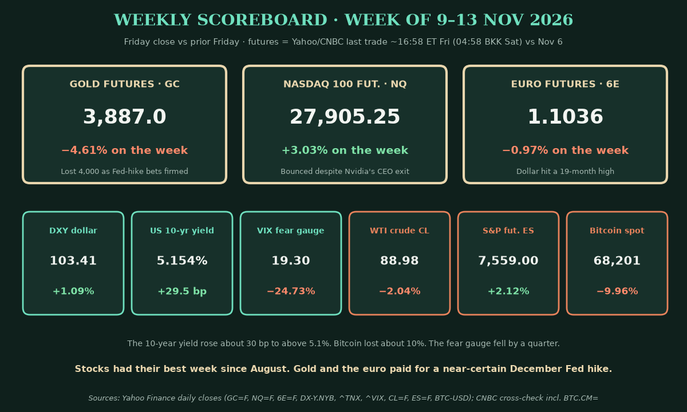
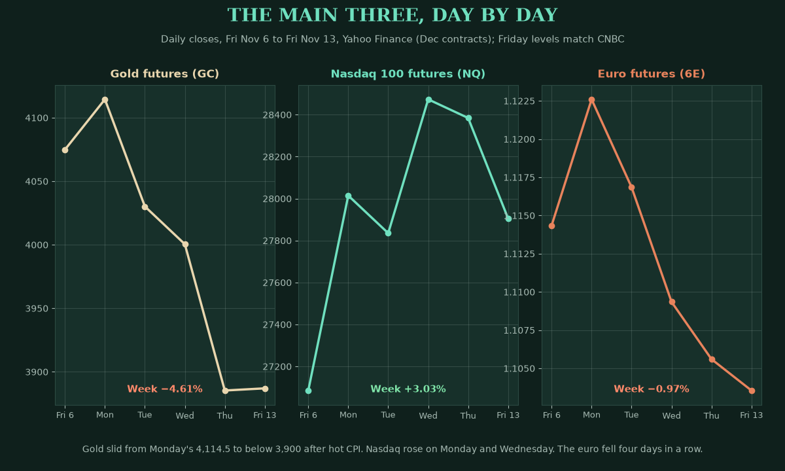
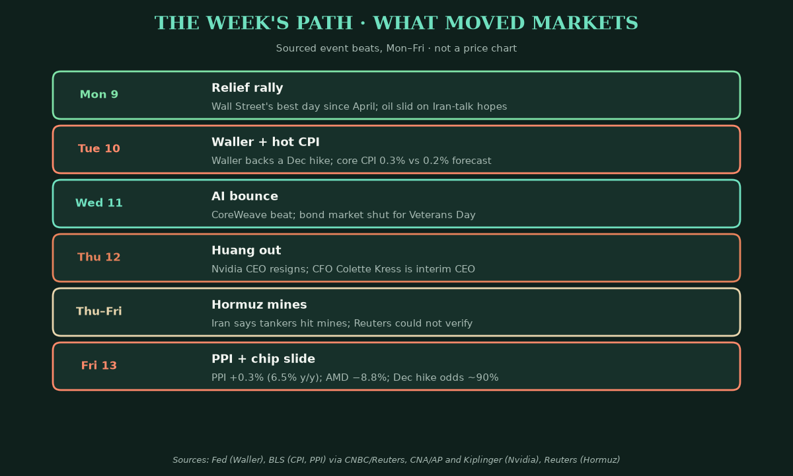
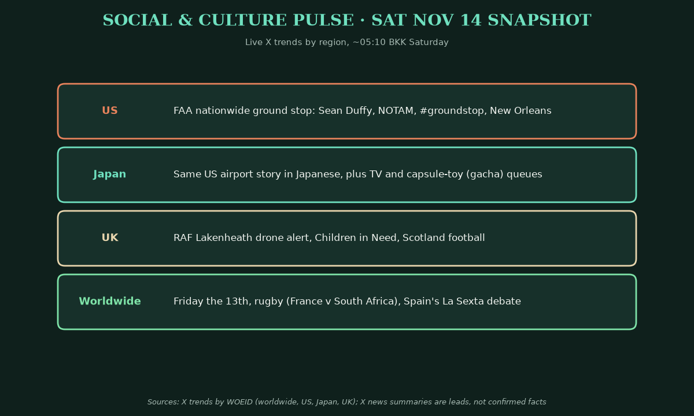
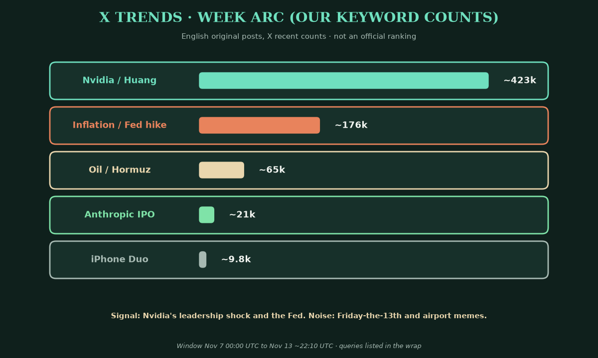
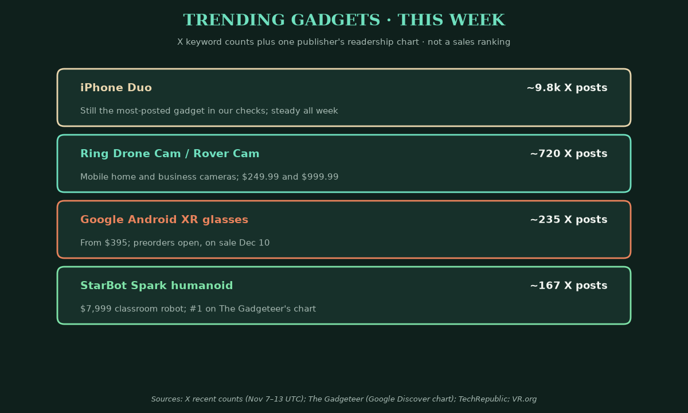
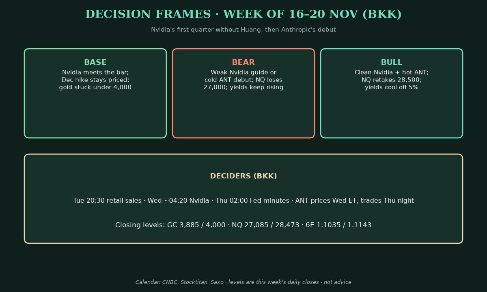

Saturday Weekly Markets Wrap · Sat Nov 14, 2026 (BKK)
April · Weekly Markets Wrap · 2026-11-14
Week of Mon Nov 9 to Fri Nov 13. Futures are Yahoo or CNBC last trade near 16:58 ET Friday (about 04:58 Saturday Bangkok time), against the prior Friday's close or settle, unless noted.
Headline: Nvidia lost its founder-CEO, inflation ran hot, and stocks still had their best week since August. Gold futures fell 4.61% to 3,887.0. Nasdaq 100 futures rose 3.03% to 27,905.25. The euro fell 0.97% to 1.10355.
So what? Hot consumer and producer prices made a December Fed hike look close to certain, about 90% odds (CME FedWatch via Kiplinger). Yields and the dollar rose, so gold and the euro paid. Tech money moved from Nvidia into other chips instead of leaving.

1) The main three
The takeaway: gold lost 4,000, Nasdaq survived the Nvidia shock, and the euro slid four days running.

- Gold futures (GC, Dec): 3,887.0, −4.61% on the week, at 04:58 BKK Saturday (Yahoo; CNBC @GC.1 3,887.00 at 16:58 ET). The base is the Nov 6 settle of 4,074.9. Driver: hike bets pushed yields up, and gold pays no interest. Friday's official CME settle was not separately confirmed.
- Nasdaq 100 futures (NQ, Dec): 27,905.25, +3.03%, at 04:58 BKK (Yahoo; CNBC 27,909.25). Driver: buyers rotated into Broadcom, AMD and Apple after Huang quit (CNBC). Friday gave some back as chips slid.
- Euro futures (6E, Dec): 1.10355, −0.97%, at 04:58 BKK (Yahoo; CNBC 1.1036). Driver: the US now pays more and is expected to hike, so the dollar wins. Euro-area Q3 GDP was confirmed at +0.4% (Eurostat).
Context. DXY was 103.41, +1.09% at 04:58 BKK (ICE via Yahoo; CNBC 103.411). DXY measures the dollar against six major currencies. The US 10-year yield ended at 5.154%, up 29.5 basis points on the week (Cboe close at 02:59 BKK; CNBC showed 5.139% at 05:03 BKK). A basis point is 0.01 percentage point. The VIX was 19.30, −24.73% (Cboe, 04:15 BKK). The VIX is Wall Street's fear gauge. Crude (CL) closed at $88.98, −2.04% (CNBC/Yahoo, 04:58 BKK). ES was 7,559.00, +2.12%, at 04:58 BKK (Yahoo; CNBC 7,558.75). Bitcoin was $68,201, −9.96%. That endpoint is CNBC/Coin Metrics BTC.CM= 68,200.92 at 05:08 BKK Saturday (17:08 ET Friday). The base is Yahoo BTC-USD's Friday Nov 6 UTC-day close, 75,746.93.
2) What happened
The takeaway: the Fed turned hawkish, inflation confirmed it, and Nvidia's boardroom became the market's biggest single story.

- Waller went hawkish Tuesday. He backs a 25 bp December hike even if inflation improves. He said a 50 bp hike "should be considered" if core CPI came in around 0.3% or higher (Fed speech text, CNBC).
- CPI ran hot. October headline +0.4%, core +0.3%. Both were 0.1 point above forecast (BLS via CNBC). Core leaves out food and energy.
- PPI was mixed. Wholesale prices rose 0.3% against a 0.4% forecast. But the annual rate hit 6.5%, the highest since November 2022 (BLS, CNBC, Reuters).
- Hike odds rose to about 90% for Dec 8–9, from 85% a day earlier (CME FedWatch via Kiplinger).
- Jensen Huang resigned Thursday. A board probe raised US national-security concerns. CFO Colette Kress is interim CEO (AP via CNA). Nvidia lost more than $600B in market value on the week (AP). The stock closed at $162.85 Friday (Investing.com).
- Friday's chip slide. AMD −8.8%, Broadcom −4.8% (Kiplinger, AP).
- Stocks still won. S&P 500 7,561.67 (+2.51%), its first winning week since early October (AP). Nasdaq Composite 25,136.27 (+2.27%). Dow 52,347.55 (+2.07%). Semiconductors +8.05% (Yahoo).
- Hormuz stayed hot. Iran says several tankers hit mines; Reuters could not verify it. At least 10 ships were hit in the first 10 days of November (Washington Institute via Reuters). Brent $96.16, −2.20% (Yahoo).
- Asia rebounded. Nikkei +6.46%, KOSPI +4.56%, Hang Seng −3.45% (Yahoo/CNBC). Euro Stoxx 50 +3.51%.
3) Social and culture pulse
The takeaway: by Saturday the feed was about grounded planes, not markets.

- Americas / Asia. X's news summary says the FAA ordered a rare nationwide ground stop after radio problems at control centers. Japan's list carried it too. This is an X summary, not yet a wire-confirmed fact.
- Europe. UK lists carried an X-reported drone alert at RAF Lakenheath, plus Children in Need and Scotland football.
- Worldwide / fluff. Friday the 13th, rugby (France v South Africa), Spain's La Sexta debate.
4) X trends: the week arc
The takeaway: Nvidia drowned everything; the Fed was the real market signal underneath.

- Nvidia / Huang: about 423k posts, peaking near 159k on Thursday.
- Inflation / Fed hike: about 176k, peaking near 47k on CPI day.
- Oil / Hormuz: about 65k, steady. Anthropic IPO: about 21k, rising from Tuesday.
- Lean scan (leads only). Timiraos tracked Waller, Logan and Bowman. Waller matches the Fed text; the rest is not used as fact. Tavi flagged silver miners breaking out against silver. That is unverified, so it is not used as fact. Smashelito said ES lost its key 7,596 level in regular hours, which fits the 7,559 close. JJ: Nvidia levels only; no paid-room promos.
- Signal: the Fed, CPI and Nvidia's leadership. Noise: Friday-the-13th and airport memes.
5) Trending gadgets
The takeaway: no gadget broke out; the iPhone Duo still leads the chatter.

- iPhone Duo: about 9.8k X posts, flat all week.
- Ring Drone Cam and Rover Cam: about 720. They cost $249.99 and $999.99 (TechRepublic).
- Google's Android XR glasses: about 235. From $395, on sale Dec 10 (VR.org, TechRepublic).
- StarBot Spark: about 167. It is a $7,999 classroom humanoid robot and topped The Gadgeteer's reader chart.
6) Decision frames for traders and investors
The takeaway: next week tests AI twice, first with Nvidia's results, then with Anthropic's IPO.

- Base case (medium): Nvidia meets expectations. December hike stays priced. Gold stays under 4,000.
- Bear case: a weak Nvidia outlook or a cold Anthropic debut. NQ loses 27,000. Yields keep climbing.
- Bull case: clean Nvidia results and a hot debut. NQ retakes 28,500. Yields cool from above 5%.
- Deciders (BKK): Tue 20:30 retail sales. Wed ~04:20 Nvidia results. Thu 02:00 Fed minutes. Anthropic prices Wednesday ET at $70–78 and trades Thursday on Nasdaq as ANT (CNBC). Walmart reports Thu 19:00.
- For Jim: Gold: 4,000 is the line to reclaim; 3,885 is the floor. NQ: 27,085 is the floor; 28,473 is the high close. Euro: 1.1035 is the low; 1.1143 must come back first.
Interpretive aside: a Friday the 13th inside Scorpio season, the sign of hidden power and succession. Symbol, not signal.
Confidence: futures, indices, yields and VIX are high (Yahoo, CNBC). CPI, PPI and Waller come from primary releases. Fed odds are medium (CME FedWatch via Kiplinger). The FAA and Lakenheath items are X summaries only. X counts are our own keyword queries.